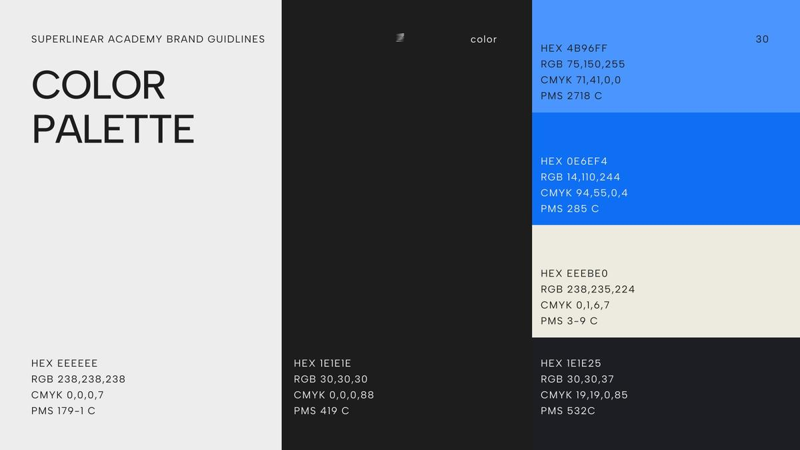
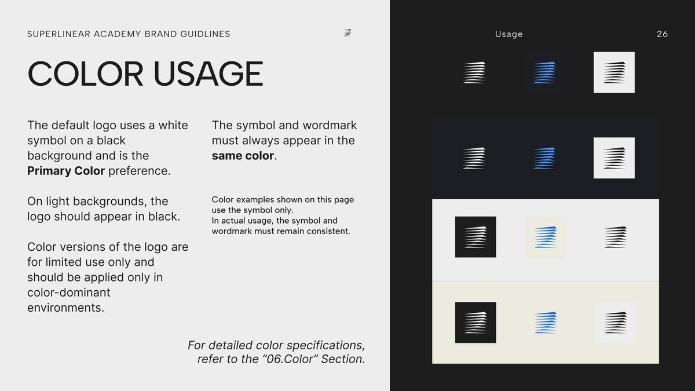

Superlinear Academy
Redesign The Visual Identity Of An AI Learning Community
The previous visual identity lacked structure and scalability, making it difficult to maintain consistency across digital platforms.
This project redefines the brand system through a modular visual language and simplified typography, which improves clarity, hierarchy, and recognizability across interfaces.


Challenges
The previous visual identity lacked visual balance and scalability. The relationship between the icon and typography was inconsistent, making the logo appear unstable across different contexts.
At smaller sizes, the icon became difficult to recognize, especially in digital environments such as favicons and social media.
Additionally, the identity lacked a structured visual system, making it difficult to maintain consistency across different applications.

Visual Identity System
The redesigned identity builds around clear geometry and typographic hierarchy. The logo structure improves visual balance and recognizability, while a simplified colour palette ensures clarity across digital media.
Together, these elements create a flexible system that supports consistent communication across platforms.



Process
Early colour drafts. The first palette added a beige and a charcoal, and the usage page tested the logo on twelve backgrounds. The final guide keeps the blues and the dark grey.